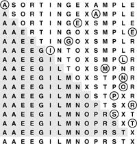

C++ Programming Robert Sedgewick - Princeton University Addison Wesley Professional Algorithms in C++, Parts 1–4: Fundamentals, Data Structure, Sorting, Searching, Third Edition C++ Programming Robert Sedgewick - Princeton University Addison Wesley Professional Algorithms in C++, Parts 1–4: Fundamentals, Data Structure, Sorting, Searching, Third Edition
6.2. Selection Sort
One of the simplest sorting algorithms works as follows. First, find the smallest element in the array, and exchange it with the element in the first position. Then, find the second smallest element and exchange it with the element in the second position. Continue in this way until the entire array is sorted. This method is called selection sort because it works by repeatedly selecting the smallest remaining element. Figure 6.2 shows the method in operation on a sample file.
The first pass has no effect in this example, because there is no element in the array smaller than the A at the left. On the second pass, the other A is the smallest remaining element, so it is exchanged with the S in the second position. Then, the E near the middle is exchanged with the O in the third position on the third pass; then, the other E is exchanged with the R in the fourth position on the fourth pass; and so forth.

Program 6.2 is an implementation of selection sort that adheres to our conventions. The inner loop is just a comparison to test a current element against the smallest element found so far (plus the code necessary to increment the index of the current element and to check that it does not exceed the array bounds); it could hardly be simpler. The work of moving the items around falls outside the inner loop: each exchange puts an element into its final position, so the number of exchanges is N – 1 (no exchange is needed for the final element). Thus the running time is dominated by the number of comparisons. In Section 6.5, we show this number to be proportional to N2, and examine more closely how to predict the total running time and how to compare selection sort with other elementary sorts.
Program 6.2. Selection sort|
For each i from l to r-1, exchange a[i] with the minimum element in a[i], . . . , a[r]. As the index i travels from left to right, the elements to its left are in their final position in the array (and will not be touched again), so the array is fully sorted when i reaches the right end.
template <class Item>
void selection(Item a[], int l, int r)
{ for (int i = l; i < r; i++)
{ int min = i;
for (int j = i+1; j <= r; j++)
if (a[j] < a[min]) min = j;
exch(a[i], a[min]);
}
}
|
A disadvantage of selection sort is that its running time depends only slightly on the amount of order already in the file. The process of finding the minimum element on one pass through the file does not seem to give much information about where the minimum might be on the next pass through the file. For example, the user of the sort might be surprised to realize that it takes about as long to run selection sort for a file that is already in order, or for a file with all keys equal, as it does for a randomly ordered file! As we shall see, other methods are better able to take advantage of order in the input file.
Despite its simplicity and evident brute-force approach, selection sort outperforms more sophisticated methods in one important application: it is the method of choice for sorting files with huge items and small keys. For such applications, the cost of moving the data dominates the cost of making comparisons, and no algorithm can sort a file with substantially less data movement than selection sort (see Property 6.5 in Section 6.5).
Exercises |  6.11 Show, in the style of Figure 6.2, how selection sort sorts the sample file E A S Y Q U E S T I O N. 6.11 Show, in the style of Figure 6.2, how selection sort sorts the sample file E A S Y Q U E S T I O N.
| | 6.12 What is the maximum number of exchanges involving any particular element during selection sort? What is the average number of exchanges involving an element? | | 6.13 Give an example of a file of N elements that maximizes the number of times the test a[j] < a[min] fails (and, therefore, min gets updated) during the operation of selection sort. | |  6.14 Is selection sort stable? 6.14 Is selection sort stable?
|
|